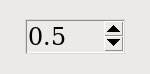

Виджет Spinbox позволяет пользователю выбирать значения из заданного диапазона. Значения могут быть диапазоном чисел или фиксированным набором строк.

На экране Spinbox имеет область для отображения текущих значений и пару стрелок.
Пользователь может нажать на стрелку, направленную вверх, чтобы перейти на следующее по порядку более высокое значение. Если значение уже достигло максимума, при желании можно настроить виджет так, чтобы новое значение переходило к самому низкому значению.
Пользователь может нажать на стрелку, направленную вниз, чтобы перейти к следующему меньшему значению в последовательности. Эта стрелка также может быть настроена на возврат так, что если текущее значение является самым низким, клик по стрелке вниз отобразит самое высокое значение.
Пользователь также может вводить значения напрямую, обращаясь с виджетом так, как если бы это был Entry. Пользователь может переместить фокус на виджет (см. Раздел 53, "Фокус: маршрутизация ввода с клавиатуры"), либо кликнув по нему, либо используя tab или shift-tab, а затем отредактировать отображаемое значение.
Чтобы создать новый виджет Spinbox в качестве дочернего элемента корневого окна или фрейма parent:
w = tk.Spinbox(parent, option, ...)
Конструктор возвращает новый виджет Spinbox. Опции включают:
Таблица 32. Опции виджета Spinbox
activebackground |
Цвет фона при наведении курсора на виджет; см. Раздел 5.3, "Цвета". |
bg или background |
Фоновый цвет виджета. |
bd или borderwidth |
Ширина границы вокруг виджета; смотрите Раздел 5.1, "Размеры". Значение по умолчанию - один пиксель. |
buttonbackground |
Цвет фона, отображаемый на стрелках. По умолчанию - серый. |
buttoncursor |
Курсор, который будет отображаться при наведении мыши на стрелки; смотрите Раздел 5.8, "Курсоры". |
buttondownrelief |
Стиль рельефа для направленной вниз стрелки; смотрите Раздел 5.6, "Стили рельефа". По умолчанию используется стиль tk.RAISED. |
buttonup |
Стиль рельефа для направленного вверх указателя стрелки; смотрите Раздел 5.6, "Стили рельефа". По умолчанию используется стиль tk.RAISED. |
command |
Используйте эту опцию, чтобы указать функцию или метод, который будет вызываться каждый раз, когда пользователь нажмет на один из указателей стрелок. Обратите внимание, что обратный вызов не вызывается, когда пользователь редактирует значение напрямую, как если бы это был Entry. |
cursor |
Выбирает курсор, который отображается при наведении мыши на область ввода виджета; смотрите Раздел 5.8, "Курсоры". |
disabledbackgrounddisabledforeground |
Эти опции выбирают цвета фона и переднего плана, отображаемые, когда state виджета имеет значение tk.DISABLED. |
exportselection |
Обычно текст в области ввода Spinbox может быть вырезан и вставлен. Чтобы запретить такое поведение, установите опцию exportselection в значение False. |
font |
Используйте эту опцию, чтобы выбрать другой шрифт для текста; смотрите Раздел 5.4, "Шрифты". |
fg или foreground |
Эта опция выбирает цвет, используемый для отображения текста в области ввода виджета, и цвет стрелок. |
format |
Используйте эту опцию для управления форматированием числовых значений в сочетании с опциями from_ и to. Например, format='%10.4f' отобразит значение в виде десятисимвольного поля с четырьмя цифрами после запятой. |
from_ |
Используйте эту опцию в сочетании с опцией to (описана ниже), чтобы ограничить значения числовым диапазоном. Например, from_=1 и to=9 позволят использовать только значения от 1 до 9 включительно. См. также опцию increment ниже. |
highlightbackground |
Цвет подсветки фокуса, когда Spinbox не имеет фокуса. Смотрите Раздел 53, "Фокус: маршрутизация ввода с клавиатуры". |
highlightcolor |
Цвет подсветки фокуса, когда Spinbox имеет фокус. |
highlightthickness |
Толщина выделения фокуса. По умолчанию 1. Установите значение 0, чтобы подавить отображение подсветки фокуса. |
increment |
Когда вы ограничиваете значения с помощью опций from_ и to, вы можете использовать опцию increment, чтобы указать, насколько увеличивается или уменьшается значение, когда пользователь нажимает на стрелку. Например, с опциями from_=0.0, to=2.0 и increment=0.5, стрелка вверх будет проходить через значения 0.0, 0.5, 1.0, 1.5 и 2.0. |
insertbackground |
Выбирает цвет курсора вставки, отображаемого в начальной части виджета. |
insertborderwidth |
Эта опция управляет шириной границы вокруг курсора вставки. Обычно курсор вставки не имеет границы. Если этот параметр имеет ненулевое значение, курсор вставки будет отображаться в стиле tk.RAISED. |
insertofftimeinsertontime |
Эти две опции управляют циклом мигания курсора вставки: количеством времени, которое он проводит выключенным и включенным, соответственно, в миллисекундах. Например, при опциях insertofftime=200 и insertontime=400 курсор будет выключен на 0,2 секунды, а затем включен на 0,4 секунды. |
insertwidth |
Используйте этот параметр для указания ширины курсора вставки; возможные значения см. в Раздел 5.1, "Размеры". По умолчанию ширина составляет два пикселя. |
justify |
Эта опция управляет положением текста в области ввода виджета. Значения могут быть tk.LEFT для выравнивания текста влево; tk.CENTER для выравнивания по центру; или RIGHT для выравнивания текста вправо. |
readonlybackground |
Эта опция задает цвет фона, который будет отображаться, когда state виджета будет 'readonly'; смотрите Раздел 5.3, "Цвета". |
relief |
Используйте эту опцию, чтобы выбрать стиль рельефа для виджета; смотрите Раздел 5.6, "Стили рельефа". По умолчанию используется стиль tk.SUNKEN. |
repeatdelayrepeatinterval |
Эти опции определяют поведение автоповтора при нажатии мыши на стрелки; значения указаны в миллисекундах. Значение repeatdelay определяет, как долго нужно удерживать кнопку мыши перед повторением, а repeatinterval - как часто повторяется функция. Значения по умолчанию - 400 и 100 миллисекунд соответственно. |
selectbackground |
Цвет фона для отображения выделенных элементов. |
selectborderwidth |
Ширина границы, отображаемой вокруг выделенных элементов. |
selectforeground |
Цвет переднего плана для отображения выделенных элементов. |
state |
Обычно виджет Spinbox создается в состоянии tk.NORMAL. Установите этот параметр в значение tk.DISABLED, чтобы виджет не реагировал на действия мыши или клавиатуры. Если вы установите значение 'readonly', то значение в начальной части виджета не может быть изменено нажатием клавиш, но значение все еще может быть скопировано в буфер обмена, и виджет все еще реагирует на нажатия на стрелок. |
takefocus |
Обычно область ввода виджета Spinbox может иметь фокус (см. Раздел 53, "Фокус: маршрутизация ввода с клавиатуры"). Чтобы удалить виджет из последовательности обхода фокуса, установите takefocus=False. |
textvariable |
Если вы хотите получить текущее значение виджета, вы можете использовать метод .get(), описанный ниже, или связать управляющую переменную с виджетом, передав ее в качестве значения этой опции. См. раздел [Раздел 52, "Управляющие переменные: значения, скрывающиеся за виджетами"] (control-variables.html). |
to |
Эта опция задает верхнюю границу диапазона значений. См. выше опцию from_, а также опцию increment. |
values |
Есть два способа указать возможные значения виджета. Один из них - указать кортеж строк в качестве значения опции values. Например, values=('red', 'blue', 'green') позволит использовать в качестве значений только эти три строки. Чтобы настроить виджет на прием диапазона числовых значений, смотрите опцию from_ выше. |
width |
Используйте эту опцию, чтобы указать количество символов, допустимых в области ввода виджета. Значение по умолчанию равно 20. |
wrap |
Обычно, когда виджет имеет максимальное значение, стрелка вверх ничего не делает, а когда виджет имеет минимальное значение, стрелка вниз ничего не делает. Если вы выберете wrap=True, то стрелка вверх будет двигаться от самого высокого значения к самому низкому, а стрелка вниз - от самого низкого значения к самому высокому. |
xscrollcommand |
Используйте эту опцию для подключения полосы прокрутки к области ввода виджета. Подробности см. в Раздел 22.2, "Подключение Scrollbar к другому виджету". |
Эти методы доступны для виджетов Spinbox:
.bbox(index)
Этот метод возвращает ограничивающую рамку символа в позиции
indexв области ввода виджета. Результатом является кортеж(x, y, w, h), где значениями являются координатыxиyлевого верхнего угла, а также ширина и высота символа в пикселях, в указанном порядке.
.delete(first, last=None)
Этот метод удаляет символы из области ввода Spinbox. Значения
firstиlastинтерпретируются стандартным, для срезов Python, образом.
.get()
Этот метод возвращает значение Spinbox. Значение всегда возвращается в виде строки, даже если виджет настроен на отображение числа.
.icursor(index)
Этот метод используется для позиционирования курсора вставки в место, указанное по
index, используя стандартное соглашение Python для позиций.
.identify(x, y)
При задании позиции
(x, y)внутри виджета этот метод возвращает строку, описывающую, что находится в этом месте. Значениями могут быть любые из:
'entry'для области ввода.
'buttonup'для стрелки, направленной вверх.
'buttondown'для стрелки, направленной вниз.
''(пустая строка), если эти координаты не находятся в пределах виджета.
.index(i)
Этот метод возвращает числовую позицию индекса
i. Аргументами могут быть любые из:
tk.ENDдля получения позиции после последнего символа записи.
tk.INSERTдля получения позиции курсора вставки.
tk.ANCHORдля получения позиции якоря выделения.
tk.SEL_FIRSTдля получения позиции начала выделения. Если выделение не находится в пределах виджета, этот метод вызывает исключениеtk.TclError.
tk.SEL_LAST, чтобы получить позицию сразу после конца выделения. Если выделение не находится в пределах виджета, этот метод вызывает исключениеtk.TclError.
- Строка вида
'@x'обозначаетx-координату в пределах виджета. Возвращаемое значение - позиция символа, содержащего эту координату. Если координата вообще находится за пределами виджета, то возвращаемым значением будет позиция символа, ближайшего к этой позиции.
.insert(index, text)
Этот метод вставляет символы из строки
textв позицию, указаннуюindex. Возможные значения индекса см. в методе.index()выше.
.invoke(element)
Вызовите этот метод, чтобы получить тот же эффект, что и при нажатии пользователем на стрелку. Аргументом
elementявляется'buttonup'для стрелки вверх, и'buttondown'для стрелки вниз.
.scan_dragto(x)
Этот метод работает так же, как и метод
.scan_dragto(), описанный в разделе 10, "Виджет Entry".
.scan_mark(x)
Этот метод работает так же, как и метод
.scan_mark(), описанный в разделе 10, "Виджет Entry".
.selection('from', index)
Устанавливает якорь выделения в виджете на позицию, заданную
index. Возможные значенияindexсм. в методе.index()выше. Начальное значение якоря выделения равно 0.
.selection('to', index)
Выбирает текст между якорем выделения и заданным
index.
.selection('range', start, end)
Выделяет текст между индексами
startиend. Допустимые значения индексов см. в методе.index()выше.
.selection_clear()
Очищает выделение.
.selection_get()
Возвращает выделенный текст. Если в данный момент выделения нет, этот метод вызовет исключение
tk.TclError.